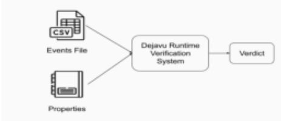
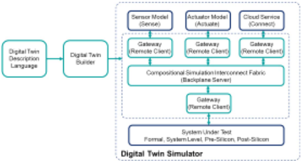
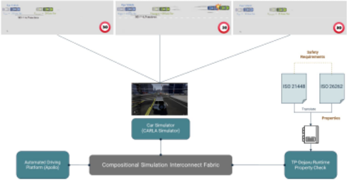
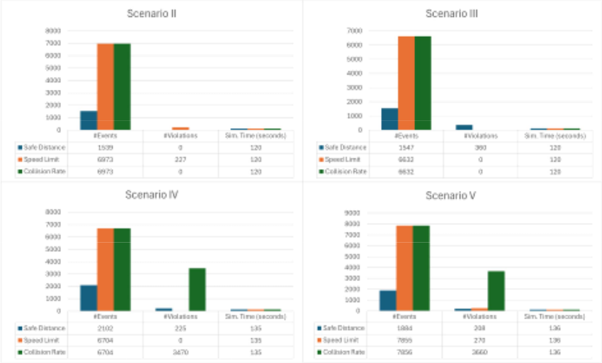
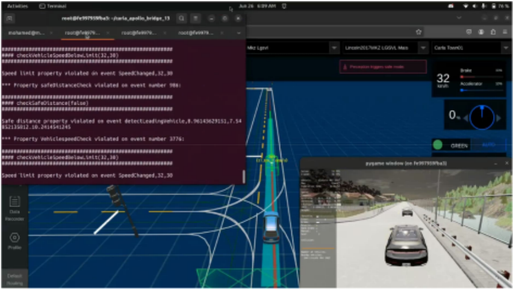

Safety Analysis of Automated Driving Platforms Using Digital Twin Simulation and Runtime Monitoring
基于 Digital Twin 仿真与 Runtime Monitoring 的自动驾驶平台（ADP）安全分析
简介
该论文针对自动驾驶平台（ADP）软件栈中传统软件与 ML 组件的安全难以保证的问题，提出一套基于数字孪生仿真的安全分析方法。方法上，将 ISO 26262 与 ISO 21448 的高层安全需求翻译为时序逻辑可验证属性，通过组合式仿真互连框架（支持 SystemC TLM 2.0、FMI 2.0、IPC）把被测平台 Apollo、场景仿真器 CARLA 与 runtime verification 监视器 TP-DejaVu 组成数字孪生，在仿真中实时检查属性违反。论文定义并实现了 Safe Distance、Road Speed Limit、Collision Rate 三个安全属性，并通过向 Apollo planning 模块注入代码级错误构造异常场景。结果显示：正常场景 135 秒仿真无任何违反；注入错误后单场景最多检测到 227 次速度限制违反，三个属性均可被监视器捕获。结论表明该流程可实现仿真过程中的实时安全验证，但作者承认属性集仍需扩展以覆盖更多环境因素。
问题
自动驾驶平台（ADP）软件栈（含传统软件与 ML 组件）的安全难以保证，需要一种可验证的方法，把 ISO 26262（组件故障相关安全需求）与 ISO 21448（ML 组件预期功能限制相关安全需求）的高层安全需求落地为可在仿真中检查的属性，对 ADP 进行安全性验证，捕获由编码错误或入侵/攻击导致的失效。
方法
将 ISO 高层安全需求翻译为一阶过去时 LTL 等形式化属性；用组合式仿真互连框架（支持 SystemC TLM 2.0、JModelica FMI 2.0、IPC，第三方模型经 Gateway 接入 backplane，由 Digital Twin Description language 与 builder 自动生成连接）把被测 ADP（Apollo）、场景仿真器（CARLA）与 runtime monitor（DejaVu/TP-DejaVu 两阶段 RV：操作规约做算术/字符串/布尔处理，声明规约做时序属性检查）组成数字孪生；在仿真中通过代码级 error injection 模拟 programmer bug 或 intrusion/attack 构造异常场景，用监视器检查 Safe Distance、Road Speed Limit、Collision Rate 三个属性的违反情况。
关键结果
场景 I：135 秒仿真期间监控全部三个安全属性，未检测到任何 violation，Apollo 无错误运行
场景 II：向 Apollo planning 模块注入错误后，120 秒仿真期间检测到 227 次 Road Speed Limit violation
场景 III：仅 Safe Distance 属性出现 violation，由 planning 模块错误注入诱发
场景 IV：Safe Distance 与 Collision Rate 两属性出现 violation（错误注入 + 前车突然制动）；场景 IV 和 V 中实际碰撞均只有 1 次，collision rate violation 按仿真 tick 计数
场景 V：三项属性均出现 violation，仿真时长 136 秒
实验环境：CARLA 0.9.13 + Apollo 8.0.0，AMD Ryzen 7 6800H CPU、16 GB RAM、RTX 3050 mobile GPU
创新点
相对已有工作（ptLTL 监视 E/E gearbox 控制器、RTAMT+CARLA 的 STL 运行时验证、STL+Breach 监控 ADAS 特性交互、LNT 形式化模型生成关键场景、SOTIF 场景推导框架、SafeBench 统一测试平台等），本文的差异在于：构建包含场景仿真器与 runtime monitoring 工具的完整 ADP 数字孪生，且安全属性直接从 ISO 26262 与 ISO 21448 标准条目提取翻译而来，并把 runtime monitor 作为 ADP 的 assertion-based verification 工具使用。
团队参考意义
相关度级别：medium
命中能力域：2.5 功能安全与安全机制 | 2.6 Fault simulation/Z01X/TFMEA
理由：论文属于 ADP 软件/系统级安全验证，不涉及硬件 IP 的 DFT、安全机制硬件设计、Safety Manual/FMEA/DFMEA/DFA/TSC 编制、diagnostic coverage 量化或 FMEDA，也未触及团队 2.1–2.4、2.7 的核心技术，因此不能评 high。但其方法论与团队 2.5（safety verification、安全需求分析）和 2.6（fault injection 与 detectability 论证）存在可借鉴的平行关系：ISO 26262/21448 高层需求 → 形式化 property → 仿真中 runtime 检查的流程，可类比团队把 Safety Manual/safety concept 需求转化为可执行 assertion 做 IP 安全验证；error injection → 检查监视器是否捕获 的闭环实验设计，与团队用 fault injection/fault grading 论证安全机制 detectability、支撑 TFMEA/FMEDA 的思路同构，属于方法借鉴而非直接命中。
建议动作：作为方法参考存档
中文全文

Safety Analysis of Automated Driving Platforms Using Digital Twin Simulation and Runtime Monitoring
基于数字孪生仿真与运行时监控的自动驾驶平台安全性分析
Tasneem A. Awaad, Hanya A. Elged, Mohamed A. Abu-Bakr, Sama Y. Fathy, Sara H. Ahmed, M. Watheq ElKharashi，艾因夏姆斯大学，埃及开罗
Mohamed AbdElSalam，Siemens EDA，埃及开罗
摘要—汽车行业的未来在于自动驾驶汽车（Autonomous Vehicles，AV）。尽管各大公司都在努力实现完全自动驾驶，但确保 AV 的安全性仍然是一项挑战。我们工作的目标是提供一个组合式仿真互连框架，用于验证自动驾驶平台（Autonomous Driving Platforms，ADP）的安全性。该目标通过以下方式实现：将 ISO 26262 和 ISO 21448 中的高层安全需求转化为可验证属性，并构建一个全面的数字孪生，其中包含用于属性检查的运行时验证（Runtime Verification，RV）监视器、汽车场景仿真器以及被测 ADP。我们以百度开发的开源自动驾驶平台 Apollo 作为案例研究，对所提框架进行了演示。
关键词—自动驾驶平台、数字孪生仿真、形式化分析、运行时验证、安全性
I. INTRODUCTION
自动驾驶平台（Automated Driving Platform，ADP），特别是高级驾驶辅助系统（Advanced Driver Assistance Systems，ADAS）软件栈的应用，推动了自动驾驶汽车（Autonomous Vehicle，AV）的快速演进，这构成了当前与未来车辆的典型特征。Waymo 和百度等行业参与者已经展示了完全自动驾驶的能力，尤其是在特定地理位置以及受限的天气和光照条件下。与此同时，Uber 等大型软件公司也在积极开发各自的自动驾驶框架。
为防止灾难性事件的发生，对 ADAS 软件栈中的传统软件和机器学习（Machine Learning，ML）组件提出安全需求的紧迫性日益凸显。在汽车领域，安全需求获取（safety requirement elicitation），亦称功能安全需求分析，由两项领域专用标准进行了明确界定：ISO 26262 规定了与组件故障相关的安全需求，ISO 21448 则概述了基于 ML 的组件在实现预期功能方面的局限性。
我们的工作旨在实现一个关键目标：利用全面的数字孪生仿真开展安全分析。该数字孪生采用组合式仿真互连结构（compositional simulation interconnect fabric）构建，将 ADP 与汽车场景仿真器（car scenario Simulator）以及运行时验证（Runtime Verification，RV）监视器相连接。我们还建立了一种安全分析方法，将 ISO 高层需求转化为可在仿真过程中验证的属性，从而确保以主动的方式开展安全评估。从本质上讲，我们的工作契合了行业对自动驾驶领域稳健安全措施的迫切需求。
本文的组织结构如下。第 II 节介绍 ISO 安全标准的相关背景，并简要介绍 ADP 以及我们用于构建安全分析组合式仿真互连框架的工具。第 III 节讨论数字孪生仿真与 AV 安全分析领域的相关工作。第 IV 节介绍所提出安全框架的工作流程。第 V 节给出我们的案例研究结果，第 VI 节讨论结论与未来工作。
A. ISO 26262 & ISO 21448
ISO 26262 [1] 是一项关于道路车辆电气与电子系统功能安全的国际标准。它源自适用范围更广的 IEC 61508 标准，并专门针对汽车应用领域。该标准利用汽车安全完整性等级（ASIL）对风险进行分类并确定所需的安全措施，其目标是确保安全相关系统能够在正确的时机正确地执行其预期功能，从而最大限度地降低因系统故障而引发事故的风险。
1
另一方面，ISO 21448 [2] 提供了一个框架，用于识别和缓解与基于机器学习（ML）系统的预期功能相关联的风险。这包括应对可能因 ML 算法的局限性而产生的潜在危害。该标准还确保 ML 系统经过设计和测试以满足安全要求，从而降低因功能不足而导致事故的可能性。通过整合这些原则，ISO 21448 有助于确保基于 ML 的汽车系统安全、可靠，并能够应对现实世界的各种复杂性。
B. Autonomous Driving Platforms
自动驾驶是指在最少量人工干预或完全无人工干预的情况下运行的车辆或系统。自动驾驶平台（ADP）为这些车辆的运行提供所需的基础设施和技术。这些 ADP 集成了定位、感知、预测、规划和控制等关键组件。由百度开发的 Apollo [3] 是一个领先的开源自动驾驶平台，我们在案例研究中采用的正是该平台。同样的方法也适用于其他 ADP，例如基于机器人操作系统（Robot Operating System, ROS）构建的 Autoware、Nvidia Drive、Intel Mobileye、Tesla Autopilot 和 Self Driving，以及 Alphabet Waymo。
C. Sensor/Scenario Simulators
传感器/场景仿真器（Sensor/Scenario Simulators）提供了一个基于物理的仿真平台，用于对高级驾驶辅助系统（ADAS）进行原型设计、测试和验证。与真实世界条件不同，仿真条件可以被完全量化和控制。在案例研究中，我们使用了 CARLA [4] 开源仿真器，其他仿真器（开源或专有）同样可以在我们的安全框架中使用。通常，这些仿真器具有 Python 或 C++ 接口，可与其他工具连接以进行协同仿真。
D. Runtime Monitoring
DejaVu [5] 是一款用 Scala 设计的监控工具，用于为过去时一阶线性时序逻辑（LTL）规范综合运行时监控器。该工具以用户定义的公式/属性为起点，对公式进行解析并生成抽象语法树，随后遍历该语法树并将其翻译为监控器程序。事件轨迹被馈入监控器，由监控器返回判定结果。如图 1 所示，它支持使用输入的事件流文件（CSV）和以时序逻辑（QTL）编写的属性文件来对事件流进行属性检查。

事件轨迹：事件轨迹文件以 CSV 格式列出事件，每个事件表示一次发生，如下所示。
detect, o1, d1
属性规范：属性以一阶过去时线性时序逻辑的形式编写在 QTL 文件中（例如，prop checkObstacleDistance :
Forall object . Forall d . detect(object , d) - > d <= R
# R is safe distance
TP-DejaVu 通过管理两阶段运行时验证（RV）对 DejaVu 进行了增强。第一阶段以 Scala 实现，通过算术、字符串和布尔操作执行操作性 RV。第二阶段使用 DejaVu 针对一阶规范进行监控。
操作性规范：操作性规范文件对变量进行初始化并执行操作。
initiate no_of_objects: int := 0 on detect(object: int, distance: int, timestamp: int)
2

no_of_objects: int := no_of_objects + 1 output objects_detected(no_of_objects, timestamp)
声明式规范：声明式规范针对操作性文件输出的事件检查条件，如下所示。
prop objectsCheck : forall no_of_objects . forall timestamp. objects_detected(no_of_objects, timestamp) -> timestamp < 10 or no_of_objects >= 5
E. Compositional Simulation Interconnect framework
为了将自动驾驶平台（ADP）与传感器/场景仿真器以及运行时监控器相连接，需要一个组合式仿真互连框架 [6]。该框架总体上可实现数字孪生各组件之间的互操作性，同步网络通信，并支持通过多种协议（例如以太网）进行数据传输。只要客户端连接符合所支持的电子设计自动化（EDA）标准，即 SystemC TLM 2.0、JModelica FMI 2.0 和进程间通信，该连接便是可行的。此类客户端包括传感器/场景仿真器、以协同仿真 FMU 形式导出的机电一体化系统仿真器、仪表盘软件、云服务，以及处于不同抽象层次的各种计算模型和 AI 模型，包括 C/C++、SystemC TLM、Python、Robot Operating System、虚拟平台、硬件仿真、FPGA 原型验证平台和嵌入式系统开发板。前提假设是，这些外部仿真器和外部模型各自运行在自己的进程中，并支持第三方 API。如图 2 所示，该特定于应用的 API 可与一个 TLM 架构门户接口相耦合——我们将其称为网关（Gateway）——该接口提供对互连架构背板的访问，用于实现事务级通信以及相互的时间推进协调。每个第三方仿真器或外部模型都被假定为一个挂接在公共背板互连上的客户端进程。背板是时间的掌管者，负责所有时间推进操作。为了简化互连架构的自动化。框架自动化流程 [7] 首先使用数字孪生描述语言（Digital Twin Description language）对客户端的连接进行描述，并由构建器解析该描述，生成连接不同数字孪生组件远程客户端所需的背板服务器和网关。

III. RELATEDWORK
There have been contributions to Safety Runtime Verification in the process of running Temporal Logic properties at runtime and other contributions in the field of AV safety in general. In [8], Donal Heffernan et al. applied ISO 26262 to define functional safety requirements for an E/E gearbox controller. The functional safety statements were mapped to Past-time Linear Temporal Logic (ptLTL) and verified using a runtime monitor. Similarly, [9] also focused on applying safety runtime monitoring on a prototype of a vehicle built with Raspberry Pi and Arduino Uno. There is also more work done on vehicles simulated on various platforms. For example, [10] showed how to integrate the RTAMT [11] library, for runtime verification of Signal Temporal Logic (STL) specifications, with the CARLA simulator. Also, in [12], Kosuke Watanabe et al. used STL and the Breach monitoring tool to monitor and detect the undesirable interactions between the Cooperative Pile-up Mitigation System (CPMS) and False-Start Prevention System (FPS) ADAS features on an AV modeled on Unity. Moreover, some research contributed to making the safety verification process easier without doing the actual testing. For example, in [13], Lina Marsso et al. focused on creating two formal models (written in the LOTOS New Technology (LNT) language) for AVs that are more comprehensive than existing models and can be used to generate relevant critical scenarios for testing AVs. In [14], Paul Rau et al. developed a structured framework for deriving scenarios necessary for the Safety of the Intended Functionality (SOTIF) analysis and applied this framework to a highly automated chauffeur system. Authors in [15] also presented a safety verification framework for AVs. The framework is based on new longitudinal and lateral safe distances, lane changes, overtaking and how to face new traffic participants. Finally, in [16], Chejian Xu et al. provided the first unified platform SafeBench to integrate different types of safety-critical testing scenarios, scenario generation algorithms, and other variations such as driving routes and environments.
3

Compared to related work, our methodology aims to build a comprehensive digital twin of ADPs with sensor/scenario simulators and runtime monitoring tools with safety properties extracted from ISO standards 26262 and 21448. Furthermore, we rely on runtime monitors as an assertion-based verification tool for ADPs.
IV. WORKFLOW
在本节中，我们详细介绍用于验证自动驾驶平台（ADP）安全性的用户工作流程，以及作为概念验证所使用的相关安全属性。如图 3 所示，该工作流程通常包含四个阶段：使用场景仿真器搭建所选的 ADP、将 ISO 高层安全需求转化为形式化逻辑属性、构建全面的数字孪生框架，最后使用 TP-DejaVu 检查是否存在任何属性违例。

ADP 的失效可能源于编写 ADP 软件栈中各组件代码时的人为错误，也可能是由于对其中任一组件的入侵/攻击所致。我们的成功标准是：在对 ADP 进行全面的数字孪生仿真期间，能够使用基于一组明确定义的安全需求的运行时监控器捕获这些失效。由于 Apollo 是一套成熟的自动驾驶软件，因此在仿真过程中采用错误注入的方法，以测试我们所检查的安全属性是否遭到违反。
A. Safety Properties
本节将讨论自动驾驶车辆的三个关键安全属性：安全距离（Safe Distance）、道路限速（Road Speed Limit）和碰撞率（Collision Rate）。其中，安全距离属性将进行详细阐述，重点展示用于验证的操作式文件（operational file）与声明式文件（declarative file）的结构。对于道路限速和碰撞率属性，则仅作简要概述，聚焦于其重要性及其实现的关键方面，而不深入探讨操作式文件与声明式文件的具体细节。
4
1) Safe Distance:
Operational Specification :
initiate
P: double := 0.01 AccMax: double := 5.4 AccBrakeMax: double := 9.8 AccBrakeMin: double := 2.9
on detectLeadingVehicle(vEgo: double, vLeading: double, distance: double) t0: double := vEgo * P t1: double := 0.5 * AccMax * P*P t2: double := vEgo + P * AccBrakeMax t3: double := 2.0 * AccBrakeMin t4: double := vLeading * vLeading t5: double := 2.0 * AccBrakeMax SD: double := t0 + t1 + (t2 * t2)/t3 - t4/t5 distanceCheck: bool := distance >= SD output checkSafeDistance(distanceCheck)
声明式规范：该属性验证预评估步骤的输出（distanceCheck）始终为真。
prop safeDistanceCheck : forall distanceCheck .
checkSafeDistance(distanceCheck) -> distanceCheck = "true"
2) Road Speed Limit:
参考 ISO 标准：ISO 26262、ISO 21448。组件：感知、规划与控制。背景：速度管理通过设定限速、减少超速以及缓解与超速相关的碰撞事故来确保安全出行。该属性验证主车遵守 CARLA 所施加的限速。
5
3) 碰撞率：参考 ISO 标准：ISO 21448。组件：感知、规划与控制。背景：碰撞率分析对于确保自动驾驶车辆的安全性和可靠性至关重要。该属性跟踪碰撞次数，并验证碰撞率是否低于规定的阈值。
B. Scenario Generation
在 TP-DejaVu 中实现安全属性后，我们生成场景以验证 TP-DejaVu 的运行时监控功能是否如预期般正常工作。这些场景通过修改代码进行错误注入，在正常模式和异常模式下测试 Apollo，以模拟程序员缺陷或入侵/攻击所产生的影响。
| Scenario | Safety Requirements Monitored (Safe Distance, Speed Limit, Collision Rate).Description | Safety Requirements Monitored (Safe Distance, Speed Limit, Collision Rate).Error Injection | Safety Requirements Monitored (Safe Distance, Speed Limit, Collision Rate).Expected Properties To be Violated |
|---|---|---|---|
| I | The host vehicle follows a leading vehicle on a road with a speed limit of 30 kilometres per hour. | No | None |
| II | Same scenario as normal mode, but the host vehicle exceeds the road speed limit. | Apollo/modules/planning/reference line/ reference line.cc - Line 827: The modification is done in the method 'Reference-Line::GetSpeedLimitFromS' to return the speed limit multiplied by two. | Speed Limit |
| III | Same scenario as normal mode, but the host vehicle follows the leading vehicle very closely. | Apollo/modules/planning/tasks/deciders/ speed decider/speed decider.cc - Line 173: 'IsFollowTooClose' to always return false. Apollo/modules/planning/tasks/optimizers/ path time heuristic/ dp st cost.cc - Line 113:'GetObstacleCost' to return the obstacle cost as zero. Apollo/modules/planning/tasks/optimizers/ piecewise_jerk speed/piecewise jerk speed nonlinear_optimizer.cc - Line 286: 'SetUpStatesAndBounds' to increase the speed upper bound by removing the subtracted 8. Apollo/modules/planning/tasks/optimizers/ piecewise_jerk speed/piecewise jerk speed optimizer.cc - Line 114:' Process' to increase the speed upper bound by removing the subtracted 8. | Safe Distance |
| IV | Same scenario as normal mode, but the host vehicle follows the leading vehicle very closely and collides with it. The leading vehicle is also controlled to suddenly break after 120 metres. | Same error injections as Scenario III | Safe distance and collision rate |
| V | Same scenario as normal mode, but the host vehicle follows the leading vehicle very closely and collides with it, and exceeds the speed limit. The leading vehicle is also controlled to suddenly break after 120 metres. | Same error injections as Scenarios II and III | Safe distance, speed limit and collision rate |
| Scenario | Safety Requirements Monitored (Safe Distance, Speed Limit, Collision Rate).Description | Safety Requirements Monitored (Safe Distance, Speed Limit, Collision Rate).Error Injection | Safety Requirements Monitored (Safe Distance, Speed Limit, Collision Rate).Expected Properties To be Violated |
V. EXPERIMENTAL RESULTS & DISCUSSIONS
In this section, we demonstrate the experimental results of verifying the three safety properties across five different scenarios. These results were obtained using Carla simulator version 0.9.13 and Apollo version 8.0.0. The scenarios were run on a machine with an AMD Ryzen 7 6800H with Radeon Graphics CPU, 16 GB of ram, and an RTX 3050 mobile GPU. Table II illustrates the results for the first scenario. In this scenario, all three safety properties were monitored over a simulation period of 135 seconds, with no violations detected. The Apollo autonomous driving platform operated without any errors, showcasing its inherent safety and reliability.
Fig. 4 contains tables that summarize the results for scenarios II, III, IV, and V, above each table, a bar graph is included to visualize the results. In scenario II, errors were intentionally injected into the planning module of Apollo to induce speed limit violations. This resulted in 227 violations over a simulation period of 120 seconds. In scenario III, violations were observed only for the Safe Distance property. These violations were induced by injecting errors into the planning module of the Apollo stack. In scenario IV, violations were observed for both Safe Distance and Collision Rate properties. These violations were induced by injecting errors into the safe distance property in the planning module of the Apollo stack and instructing the leading vehicle to suddenly brake. In scenario V, errors were intentionally injected into the planning module of Apollo in addition to instructing the leading vehicle to suddenly brake to induce violations for all three properties over a simulation period of 136 seconds. Note that the violations for the collision rate property do not indicate the number of collisions, in fact, there was only one collision in both scenarios IV and V. The reason for this is that the property is checked at each tick of the simulation, so all the events would be recorded as violations until the vehicle travels a sufficient distance without collisions.
6
| Property.Property | Scenario I.#Events | Scenario I.#Violations | Scenario I.Sim. Time (sec) |
|---|---|---|---|
| Safe Distance | 1,644 | 0 | 135 |
| Speed Limit | 7,255 | 0 | 135 |
| Collision Rate | 7,255 | 0 | 135 |
| Property.Property | Scenario I.#Events | Scenario I.#Violations | Scenario I.Sim. Time (sec) |

VI. CONCLUSIONS
在本文中，我们成功展示了将自动驾驶平台的数字孪生集成到汽车场景仿真器中、并结合运行时监视器进行安全分析的可行性与有效性。通过将行业标准 ISO 26262 和 ISO 21448 中的高层安全需求转化为可检查的属性，我们建立了一条在数字孪生仿真过程中进行实时安全验证的流水线。
未来的研究应致力于开发更全面的属性列表，纳入更广泛的环境因素，以支持现有或新开发的自动驾驶平台在各种真实世界场景中的安全合规性验证。
7
